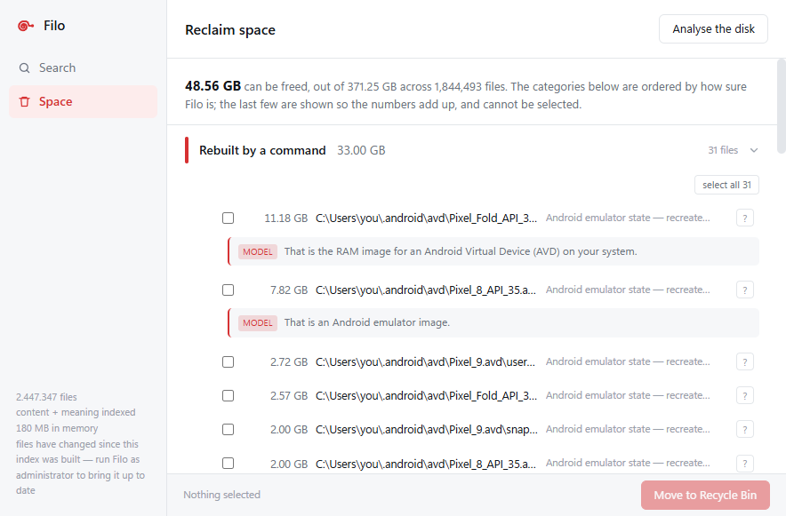

The three lists
One question, answered by three different searches.
Each layer runs in turn, cheapest first, and the results are merged by rank. Pick a question and watch which layer actually finds the file.
Where the disk went
It shows you what is taking up space. It never decides.
No "safe to delete" score, because a number invites automation and automation is the one thing that must not happen where the action cannot be undone. Nothing is ever pre-selected. Deletion means the Recycle Bin and nothing else.

How it works
Fast because of what it refuses to do.
The file table, not a walk
NTFS already keeps every file in one internal table. Asking the driver for it takes seconds; walking the directories takes minutes.
Arrays, not objects
Names in one contiguous pool with offsets beside them. No string per file, no allocation per file, and a search touches only the names.
Parsers in another process
Every document format is arithmetic over bytes of unknown origin. They run in workers under a job object. A malformed file costs one worker.
The model is kept on a leash
Its reply is forced through a grammar into fixed options, so the worst it can do is choose wrongly from a list we wrote.
| File table read | 2.4 million records in 6.3 s |
|---|---|
| Held in memory | 2,447,347 files · 180 MB |
| A search | 13 ms |
| Embedding vectors | 579,190 · 384 dims · int8 |
| Offered for deletion | 48.6 GB of a 372 GB disk |
Before you download
What doesn't work yet.
Written here rather than discovered later.
The first run needs administrator rights. Reading the file table is an elevated operation on Windows. Without it, the first run fails and no window opens.
Windows will warn you. The download is not code-signed, so SmartScreen asks. Choose More info, then Run anyway.
Search by meaning needs a model you fetch yourself. Two GGUF files, dropped in a folder. Nothing is downloaded for you.
18% of text chunks are still truncated before the embedding model reads their end. Down from 92%, not yet zero.
One volume at a time, NTFS only. No OCR, and
no extractor for .doc, .xls or
.ppt.